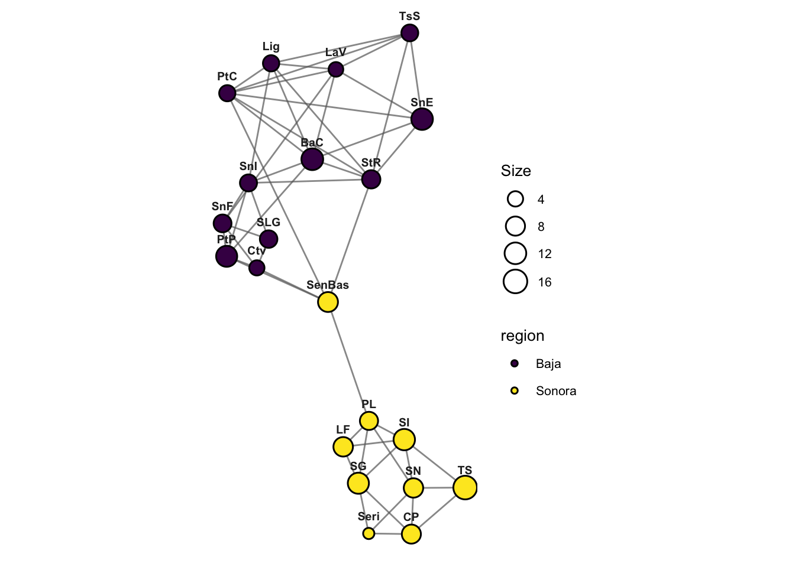

library(gstudio)
library(dplyr)
library(igraph)Warning: package 'igraph' was built under R version 4.6.1data(arapat)Population Graphs are a graph-theoretic approach to understanding among-population genetic connectivity (Dyer & Nason 2004). Rather than assuming a specific model of gene flow (e.g., island or stepping-stone), population graphs estimate the conditional genetic covariance structure among populations, retaining only statistically significant edges.
library(gstudio)
library(dplyr)
library(igraph)Warning: package 'igraph' was built under R version 4.6.1data(arapat)The easiest way to create a population graph is with population_graph(), which handles the conversion from genotypes to multivariate data internally:
graph <- arapat |>
population_graph(stratum = "Species")Warning in popgraph(data, groups, ...): 1 variables are collinear and being
dropped from the discriminant rotation.graphIGRAPH c3ff56d UNW- 3 3 --
+ attr: name (v/c), size (v/n), weight (e/n)
+ edges from c3ff56d (vertex names):
[1] Cape --Mainland Cape --Peninsula Mainland--PeninsulaFor more control, convert genotypes to multivariate format first, then call popgraph() directly:
mv <- arapat |>
to_mv()
groups <- arapat |>
pull(Species) |>
factor()
graph <- mv |>
popgraph(groups)Warning in popgraph(mv, groups): 1 variables are collinear and being dropped
from the discriminant rotation.graphIGRAPH ce51cea UNW- 3 3 --
+ attr: name (v/c), size (v/n), weight (e/n)
+ edges from ce51cea (vertex names):
[1] Cape --Mainland Cape --Peninsula Mainland--PeninsulaThe alpha parameter controls edge retention significance (default 0.05):
graph_strict <- mv |>
popgraph(groups, alpha = 0.01)Warning in popgraph(mv, groups, alpha = 0.01): 1 variables are collinear and
being dropped from the discriminant rotation.graph_strictIGRAPH 756213b UNW- 3 3 --
+ attr: name (v/c), size (v/n), weight (e/n)
+ edges from 756213b (vertex names):
[1] Cape --Mainland Cape --Peninsula Mainland--PeninsulaUse as.popgraph() to convert a pre-computed adjacency matrix:
A <- matrix(c(0, 1, 0, 1,
1, 0, 1, 0,
0, 1, 0, 1,
1, 0, 1, 0), nrow = 4)
rownames(A) <- colnames(A) <- LETTERS[1:4]
g <- A |>
as.popgraph()
gIGRAPH e807702 UNW- 4 4 --
+ attr: name (v/c), weight (e/n)
+ edges from e807702 (vertex names):
[1] A--B A--D B--C C--DThe package includes two pre-computed population graphs:
data(lopho)
lophoIGRAPH 6af7beb UNW- 21 52 --
+ attr: name (v/c), size (v/n), region (v/c), weight (e/n)
+ edges from 6af7beb (vertex names):
[1] BaC--LaV BaC--Lig BaC--PtC BaC--PtP BaC--SnE BaC--SnI
[7] BaC--StR Ctv--PtP Ctv--SLG Ctv--SnF Ctv--SenBas LaV--Lig
[13] LaV--PtC LaV--SnE LaV--SnF LaV--TsS Lig--PtC Lig--SnI
[19] Lig--StR Lig--TsS PtC--SnE PtC--StR PtC--TsS PtC--SenBas
[25] PtP--SnF PtP--SnI PtP--SenBas SLG--SnF SLG--SnI SnE--StR
[31] SnE--TsS SnF--SnI SnI--StR StR--TsS StR--SenBas CP --Seri
[37] CP --SG CP --SN CP --TS LF --PL LF --SG LF --SI
[43] PL --SenBas PL --SG PL --SI PL --SN
+ ... omitted several edgesdata(upiga)
upigaThis graph was created by an old(er) igraph version.
ℹ Call `igraph::upgrade_graph()` on it to use with the current igraph version.
For now we convert it on the fly...IGRAPH 3157d53 UNW- 18 58 --
+ attr: name (v/c), size (v/n), color (v/c), weight (e/n)
+ edges from 3157d53 (vertex names):
[1] SI --PL SI --LF SI --CP SI --Ctv SI --TrV
[6] SI --SenBas SG --CP SG --Seri SG --EH SG --LaV
[11] PL --LF PL --SN PL --Seri PL --EH PL --SenBas
[16] TS --CP TS --SN TS --Seri TS --EH TS --Ctv
[21] TS --LaV TS --SnF LF --CP LF --SN LF --Ctv
[26] LF --SLG LF --SnF LF --SnE CP --SN CP --EH
[31] CP --LaV CP --SenBas SN --Seri SN --SenBas Seri--SLG
[36] EH --SLG EH --SenBas Ctv --SLG Ctv --TrV Ctv --BaC
+ ... omitted several edgesThe decorate_graph() function merges external data into graph vertex attributes. This is essential for spatial visualization:
data(baja)
baja |>
head() Region Population Latitude Longitude
1 Baja BaC 26.59 -111.79
2 Baja Ctv 29.73 -114.72
3 Baja LaV 24.04 -109.99
4 Baja Lig 25.73 -111.27
5 Baja PtC 24.19 -111.15
6 Baja PtP 29.03 -113.90lopho_dec <- lopho |>
decorate_graph(baja, stratum = "Population")
lopho_dec |>
vertex_attr_names()[1] "name" "size" "region" "Region" "Latitude" "Longitude"Now the graph nodes carry coordinate and metadata attributes.
# Vertex names
V(lopho)$name [1] "BaC" "Ctv" "LaV" "Lig" "PtC" "PtP" "SLG" "SnE"
[9] "SnF" "SnI" "StR" "TsS" "CP" "LF" "PL" "SenBas"
[17] "Seri" "SG" "SI" "SN" "TS" # Degree (number of edges)
lopho |>
degree() BaC Ctv LaV Lig PtC PtP SLG SnE SnF SnI StR
7 4 6 6 7 5 3 5 5 6 7
TsS CP LF PL SenBas Seri SG SI SN TS
5 4 3 5 5 3 5 5 5 3 # Betweenness centrality
lopho |>
betweenness() BaC Ctv LaV Lig PtC PtP SLG SnE SnF SnI StR
9 31 4 0 0 25 3 0 16 8 30
TsS CP LF PL SenBas Seri SG SI SN TS
0 2 0 92 98 1 32 15 0 0 The multivariate centroid distance between population centroids in discriminant space:
cd <- mv |>
centroid_distance(groups)
cd [,1] [,2] [,3] [,4] [,5] [,6]
Cape 0.0800000 0.9200000 0.1333333 0.8533333 0.00000000 0.00000000
Mainland 0.2638889 0.7361111 0.8194444 0.0000000 0.01388889 0.00000000
Peninsula 0.6924603 0.3075397 0.3432540 0.0000000 0.59920635 0.03769841
[,7] [,8] [,9] [,10] [,11] [,12]
Cape 0.000000000 0.3000000 0.70000000 0.00000000 0.000000000 0.000000000
Mainland 0.000000000 0.2222222 0.00000000 0.63888889 0.111111111 0.000000000
Peninsula 0.003968254 0.9007937 0.04960317 0.02380952 0.009920635 0.007936508
[,13] [,14] [,15] [,16] [,17] [,18]
Cape 0.9666667 0.03333333 0.00000000 0.9333333 0.000000000 0.000000000
Mainland 0.7916667 0.15277778 0.02777778 0.5277778 0.000000000 0.000000000
Peninsula 0.5714286 0.42857143 0.27976190 0.6726190 0.001984127 0.001984127
[,19] [,20] [,21] [,22] [,23] [,24]
Cape 0.08666667 0.5733333 0.286666667 0.00000000 0.0000000 0.00000000
Mainland 0.00000000 0.0000000 0.000000000 0.00000000 0.0000000 0.05555556
Peninsula 0.00000000 0.0000000 0.009920635 0.09722222 0.3174603 0.33730159
[,25] [,26] [,27] [,28] [,29] [,30]
Cape 0.0000000 0.00000000 0.000000000 0.0000000 0.000000000 0.01333333
Mainland 0.0000000 0.01388889 0.361111111 0.1527778 0.000000000 0.00000000
Peninsula 0.1964286 0.01785714 0.001984127 0.0000000 0.001984127 0.00000000
[,31] [,32] [,33] [,34] [,35] [,36] [,37]
Cape 0.013333333 0.94000000 0.00000000 0.000 0.02 0.00000000 0.00000000
Mainland 0.861111111 0.01388889 0.05555556 0.000 0.00 0.00000000 0.00000000
Peninsula 0.003968254 0.00000000 0.00000000 0.625 0.00 0.03968254 0.03571429
[,38] [,39] [,40] [,41] [,42] [,43]
Cape 0.01333333 0.000000000 0.00000000 0.00000000 0.00000000 0.00000000
Mainland 0.06944444 0.000000000 0.01388889 0.08333333 0.08333333 0.00000000
Peninsula 0.28968254 0.005952381 0.00000000 0.00000000 0.00000000 0.01190476
[,44] [,45] [,46] [,47] [,48] [,49]
Cape 0.00000000 0.0000000 0.0000000 0.00000000 0.00000000 0.00000000
Mainland 0.01388889 0.0000000 0.0000000 0.00000000 0.02777778 0.04166667
Peninsula 0.38293651 0.1150794 0.3730159 0.03571429 0.00000000 0.01785714
[,50] [,51] [,52] [,53] [,54] [,55]
Cape 0.00000000 0.0000000 0.0000000 0.00000000 0.000000000 0.006666667
Mainland 0.09722222 0.2916667 0.2222222 0.04166667 0.000000000 0.000000000
Peninsula 0.05357143 0.0000000 0.0000000 0.00000000 0.001984127 0.000000000
[,56] [,57] [,58]
Cape 0.18 0.7733333 0.04
Mainland 0.00 0.0000000 0.00
Peninsula 0.00 0.0000000 0.00Multivariate variance around each population centroid:
cv <- mv |>
centroid_variance(groups)
cv Stratum variance
1 Cape 1.519820
2 Mainland 2.169841
3 Peninsula 2.886842Shannon entropy quantifies the uncertainty in a probability distribution:
# Entropy of the degree distribution
deg <- lopho |>
degree()
(deg / sum(deg)) |>
shannon_entropy()[1] 4.344766A measure of how edges deviate from geographic expectations (requires decorated graph with coordinates):
lopho_dec |>
edge_contortion()Compare the topology of two population graphs:
data(lopho)
data(upiga)
lopho |>
congruence_topology(upiga)This graph was created by an old(er) igraph version.
ℹ Call `igraph::upgrade_graph()` on it to use with the current igraph version.
For now we convert it on the fly...Warning in congruence_topology(lopho, upiga): These two topologies have
non-overlapping node sets! Careful on interpretation.IGRAPH 762da6e UN-- 16 19 --
+ attr: name (v/c)
+ edges from 762da6e (vertex names):
[1] BaC --LaV BaC --SnE BaC --StR Ctv --SLG Ctv --SnF
[6] LaV --SnE SLG --SnF StR --SenBas CP --SG CP --SN
[11] CP --TS LF --PL LF --SI PL --SenBas PL --SI
[16] PL --SN Seri--SG Seri--SN SN --TS Use test_congruence() to test whether two graphs are more similar in topology than expected by chance:
lopho |>
test_congruence(upiga, method = "combinatorial")The permute_popgraph() function creates a null distribution of graph topologies by permuting the data:
null_graphs <- mv |>
permute_popgraph(groups, nperm = 99)The - operator computes the difference between two popgraphs (removes edges in common). You can also extract subgraphs using igraph functions:
smaller <- lopho |>
delete_vertices("SenBas")
V(smaller)$name [1] "BaC" "Ctv" "LaV" "Lig" "PtC" "PtP" "SLG" "SnE" "SnF" "SnI"
[11] "StR" "TsS" "CP" "LF" "PL" "Seri" "SG" "SI" "SN" "TS" M <- lopho |>
to_matrix()
M[1:5, 1:5] BaC Ctv LaV Lig PtC
BaC 0 0 1 1 1
Ctv 0 0 0 0 0
LaV 1 0 0 1 1
Lig 1 0 1 0 1
PtC 1 0 1 1 0lopho |>
to_df() |>
head() Stratum size region
1 BaC 12.158810 Baja
2 Ctv 3.880886 Baja
3 LaV 3.533757 Baja
4 Lig 4.731355 Baja
5 PtC 4.684652 Baja
6 PtP 10.925375 Bajalopho |>
to_json() |>
cat()# As sf object
sf_obj <- lopho_dec |>
to_sf()
# As KML
lopho_dec |>
to_kml(file = "lopho.kml")The .pgraph format is a simple text representation:
lopho_dec |>
write_popgraph(file = "lopho.pgraph")g <- system.file("extdata", "lopho.pgraph", package = "gstudio") |>
read_popgraph()
gIGRAPH 4b64893 UNW- 21 50 --
+ attr: name (v/c), size (v/n), color (v/c), weight (e/n)
+ edges from 4b64893 (vertex names):
[1] BaC --LaV BaC --Lig BaC --PtP BaC --SnE BaC --SnI
[6] BaC --StR BaC --SenBas Ctv --PtP Ctv --SLG Ctv --SnF
[11] Ctv --SenBas LaV --Lig LaV --SnE LaV --SnF LaV --TsS
[16] Lig --PtC Lig --SnE Lig --SnI Lig --StR PtC --SnE
[21] PtC --StR PtC --TsS PtP --SnF PtP --SnI PtP --SenBas
[26] SLG --SnF SLG --SnI SnE --StR SnE --TsS SnF --SnI
[31] SnI --StR StR --TsS StR --SenBas CP --LF CP --Seri
[36] CP --SG CP --SN CP --TS LF --PL LF --SG
+ ... omitted several edgesplot() draws a Population Graph with ggplot2 and returns a ggplot you can extend with +. Nodes are placed from Longitude/Latitude vertex attributes when present (for example after decorate_graph()), and otherwise with a Kamada-Kawai layout; pass layout = to choose another layout name, a layout function, or a coordinate table. The same layout, node_size, node_labels, node_fill, edges and edge_width options apply to plot() on a gravity field and to animate_popgraphs(). Directed graphs from asymmetric_popgraph() are drawn with arrows. For fully custom figures, use ggraph (see the Visualization article).
lopho |>
plot()
Generate a random graph with the same nodes and degree sequence as the original (the default, mode = "degree", uses degree-preserving edge swaps), or with the same number of edges placed at random (mode = "full"):
rg <- lopho |>
randomize_graph()
rgIGRAPH feabf8d UN-- 21 52 --
+ attr: name (v/c), size (v/n), region (v/c)
+ edges from feabf8d (vertex names):
[1] BaC --SnI Lig --PtC StR --SN SnE --StR LaV --StR
[6] PtP --PL CP --Seri LF --SN BaC --LaV Ctv --SnI
[11] PtP --SI SLG --PL Lig --TsS Lig --SenBas Lig --SnE
[16] PtC --StR Ctv --Seri SnE --SI Lig --SnF PtC --TsS
[21] LaV --TS PL --SI BaC --SG BaC --StR SG --TS
[26] BaC --PtC StR --TsS PtP --SG LaV --SnF SenBas--SN
[31] SLG --SG PtC --TS LaV --CP Ctv --LaV TsS --PL
[36] BaC --SN SnI --SenBas SnF --SenBas PtC --PtP CP --PL
+ ... omitted several edgesEach edge of a Population Graph is symmetric, but the two populations it joins are compared against different neighbourhoods. Genetic gravity reads the direction of gene flow from that difference: edge asymmetries \(\Delta\), a source–sink score \(S\) for every population, the partitioned distance pGD, tests for a directional gradient, and maps of the gravity field. It has its own chapter, Chapter 9, which walks through the analysis from raw genotypes.
lopho |>
gravity_field() |>
plot()
graph <- population_graph(arapat, stratum = "Species")
graph <- popgraph(to_mv(arapat), factor(arapat$Species), alpha = 0.05)
lopho_dec <- decorate_graph(lopho, baja, stratum = "Population")
cd <- centroid_distance(to_mv(arapat), factor(arapat$Species))
congruence_topology(lopho, upiga)
M <- to_matrix(lopho)
g <- read_popgraph(system.file("extdata", "lopho.pgraph", package = "gstudio"))
plot(lopho, layout = "kk")
plot(gravity_field(lopho))